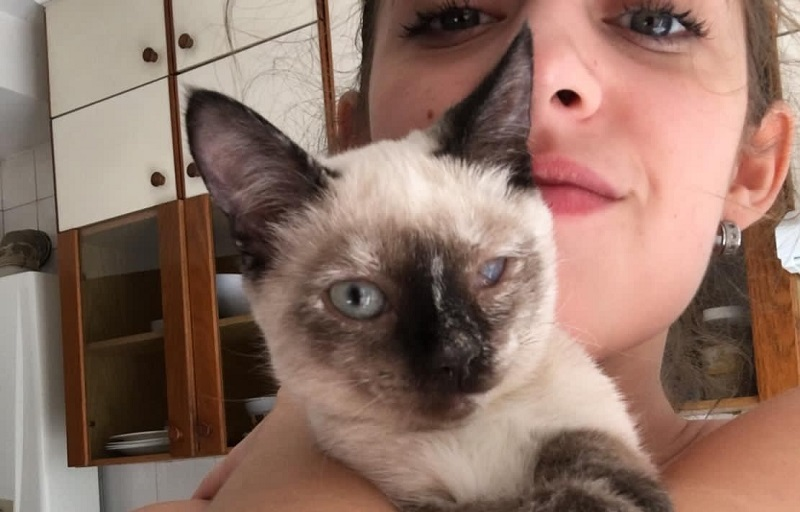
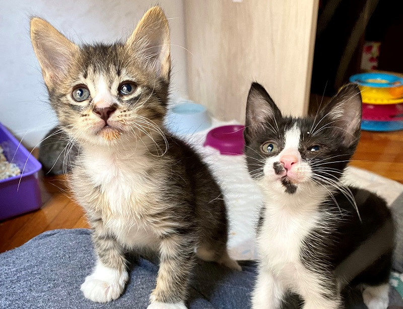

Dado que hoy en día son muy pocos los refugios físicos que existen de animales, además de que un refugio no puede brindar el soporte emocional que la mayoría de los animales rescatados necesitan, es fundamental la existencia de los hogares de tránsito para poder llevar a cabo los rescates y rehabilitacion de animales en situacion de calle.
Un hogar de tránsito funciona como una estadía temporal para un animal que no tiene hogar, donde poder estar a resguardo y con sus necesidades básicas cubiertas, así como también llevar a cabo cualquier rehabilitación que necesitase, hasta llegar a la meta de conseguirle un hogar definitivo.
Los hogares de tránsito son un soporte físico y emocional muy importante para cada animal que acarrea una historia de abandono e indiferencia, allí vuelven a confiar, sanan sus heridas en su cuerpo y en su alma y vuelven a ser aquellos que siempre debieron ser.
El proceso de transitar un animal es mágico, no solo por poder ver la evolución en primera persona de cada uno, sino también por el sentimiento de pertenencia y la sensación de superación que implica para uno mismo haber sido el responsable de sacarlo adelante. Hay casos más fáciles y otros más difíciles, pero cada uno genera una experiencia única e inigualable, involucrarse en la cadena de salvar un animal ofreciendose a ser su hogar de tránsito es el reflejo de la mismísima voluntad desinteresada.

Y si, como siempre ocurre, lo más dificil es el desapego cuando aquellos que viste florecer abren las alas para abandonar el nido y volar a su hogar definitivo, pero teniendo como premisa la firme decision de seguir ayudando, el foco hay que ponerlo en que puedan irse a hogares definitivos así tu lugar y tus manos quedan disponibles para brindar la misma oportunidad a otro animal que la necesite.

Sumate al equipo de tránsitos para que podamos seguir salvando vidas! Si sos de CABA y tenes ganas de sumarte, a continuación podes leer las pautas y condiciones para formar parte en el formulario, si estás de acuerdo podes completarlo para que te tengamos en cuenta en el próximo rescate:
PRESIONÁ ACÁ PARA ACCEDER AL FORMULARIO